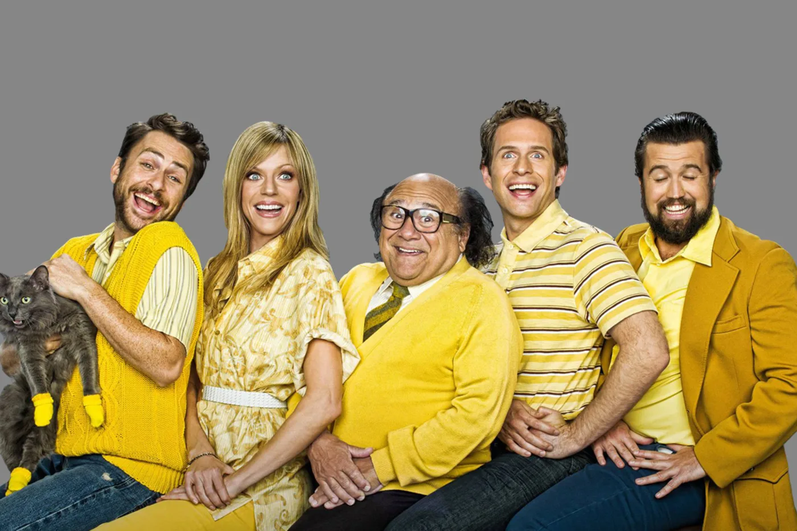

Always Sunny Fandom

Have you ever wanted to know what member of the gang you are? Well, if this is something you are dying to find out, take the quiz down below!
Which Always Sunny in Philadelphia Character Are You?
1: What food would you like to eat?